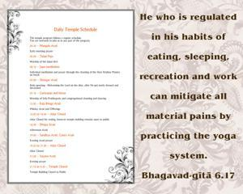
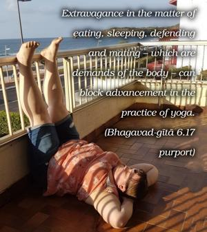
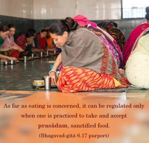
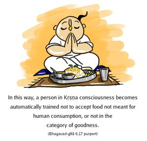
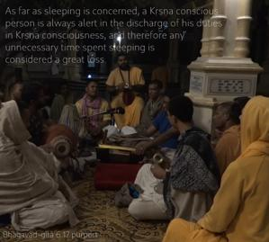

He who is regulated in his habits of eating, sleeping, recreation and work can mitigate all material pains by practicing the yoga system.





Extravagance in the matter of eating, sleeping, defending and mating – which are demands of the body – can block advancement in the practice of yoga. As far as eating is concerned, it can be regulated only when one is practiced to take and accept prasādam, sanctified food. Lord Kṛṣṇa is offered, according to the Bhagavad-gītā (9.26), vegetables, flowers, fruits, grains, milk, etc. In this way, a person in Kṛṣṇa consciousness becomes automatically trained not to accept food not meant for human consumption, or not in the category of goodness. As far as sleeping is concerned, a Kṛṣṇa conscious person is always alert in the discharge of his duties in Kṛṣṇa consciousness, and therefore any unnecessary time spent sleeping is considered a great loss. Avyartha-kālatvam: a Kṛṣṇa conscious person cannot bear to pass a minute of his life without being engaged in the service of the Lord. Therefore, his sleeping is kept to a minimum. His ideal in this respect is Śrīla Rūpa Gosvāmī, who was always engaged in the service of Kṛṣṇa and who could not sleep more than two hours a day, and sometimes not even that. Ṭhākura Haridāsa would not even accept prasādam nor even sleep for a moment without finishing his daily routine of chanting with his beads three hundred thousand names. As far as work is concerned, a Kṛṣṇa conscious person does not do anything which is not connected with Kṛṣṇa’s interest, and thus his work is always regulated and is untainted by sense gratification. Since there is no question of sense gratification, there is no material leisure for a person in Kṛṣṇa consciousness. And because he is regulated in all his work, speech, sleep, wakefulness and all other bodily activities, there is no material misery for him.